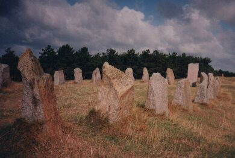

|
Trente-trais blianches danmes sont à danser - Des p'tites, des grandes; i' font des révéthences En deux lîngnes. Ah! i' dansent sans té, Mais ch'est pouor té tch'i' dansent, i' dansent, i' dansent.
I' dans'sont tréjous sus la mielle
Es'sont les veues tchi dgid'dont tan baté
|
Geraint Jennings
19/8/1999

Viyiz étout: